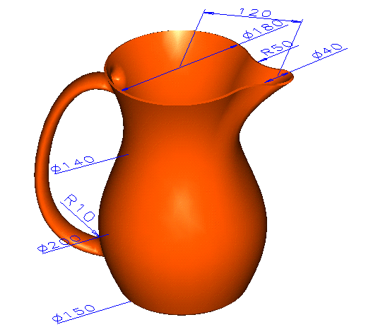

| Next Page | Previous Page | First Page |

Modifications can be made using the dimensions
at the part level.

Modifications can be made to the Sweep feature
to add dimensions to the sweep path spline end points. The spline may still
be dynamically dragged.

For mode advanced users.
Add 2 lines ensuring that they start at the spline ends. Add the linear and angular dimensions (Hard Constraints). Add Match Tangent contraint (Soft) from the spline ends to the lines. This allows for tangency control at the spline ends.